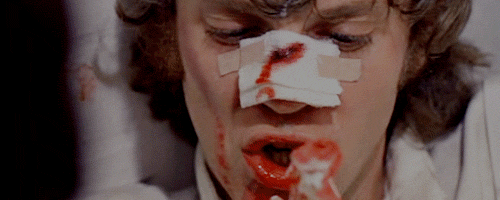

KRITIKE
- Kritika je većinom hvalila film, makar su i neki prigovarali da je nasilje previše ekscesivno.


- James Brundage je hvalio film: "Poruka, za sve one koji nisu u stanju analizirati "Paklenu naranču" u bilo čemu osim u nasilju, je ista ona u Hinduizmu koja govori o karmi; svatko na kraju dobije ono što zaslužuje.
"Paklena naranča" je film koji, od početka do kraja, pršti ironijom. To je briljantno, crno poetično djelo koje istodobno fascinira i izaziva gađenje". - S druge strane, Roger Ebert je jednostavno otvoreno priznao da mu se film nije svidio: "Kubrickova "Paklena naranča" je ideološki kaos, paranoidna desničarska fantazija koja se maskirala kao Orwellovo upozorenje. Pravi se da se protivi policijskoj državi i nametnutoj kontroli uma, no sve što radi je samo slavljenje zlobe glavnog protagonista, Alexa".”

- Arsen Oremović je filmu dao 4 od 4 'kritičarska prsta': "Nakon devedesetih, s filmovima kao što su "Rođeni ubojice", "Pakleni šund" i nizom drugih prozivanih naslova, definitivno su se pomakle granice u prikazivanju i percepciji nasilja na filmu.
S današnje distance djeluje pomalo neshvatljivo da je "Paklena naranča" trpjela tako žestoke napade i bila zabranjena.
Međutim, to ne znači da film djeluje staromodno jer Kubricku već na početku nije bio cilj scenama nasilja ići za realizmom, nego ih je koreografirao poput baleta, a poetika filma ostala je uglavnom netaknuta"